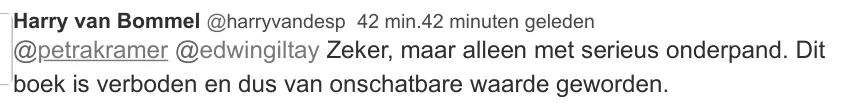

Exhibit · Tweet
Harry van Bommel, Member of Parliament, on Twitter, 21 December 2015
The passage
“Certainly, but only against serious collateral. This book is banned and has therefore become priceless.” The reply by Harry van Bommel, the second post in the Twitter exchange reproduced in the email. Translated from the Dutch; the original wording is below.
Original wording
“Zeker, maar alleen met serieus onderpand. Dit boek is verboden en dus van onschatbare waarde geworden.” The reply opens with the handles @petrakramer and @edwingiltay, which are left out above. The Dutch word onderpand means the security a lender holds against a loan, and it also gives this exhibit its file name.

Why this document matters
In December 2015 the District Court imposed a complete publication and speaking ban on the author of The Cover-up General, forbidding not only distribution, publication and reprinting but also any further promotion of the book. A week later a Member of Parliament was asked in public whether the book could still be borrowed from the library of his party’s foreign affairs working group, and he answered that it could, but only against serious collateral, because the ban had made the book priceless. The answer was perhaps meant in jest. The exchange is the example with which the site illustrates the forbidden-fruit effect. Giltay preserved it that same day in an email to his copy editor. He signed that email as ‘muzzled author’, above a link to an archived copy of what he called his former website.
Provenance
- Document
- Email preserving a public Twitter exchange, printed from Gmail
- From
- Edwin Giltay
- To
- Marco Bakker
- Date
- 21 December 2015, 17:45
- Subject
- Onschatbare waarde (Priceless)
- Contents
- A Twitter exchange of two posts, introduced by Giltay as ‘this funny Twitter conversation I cannot keep from you’
- Question by
- @petrakramer, posted earlier that afternoon, asking how the library of the SP foreign affairs working group (Werkgroep Buitenland SP) works and whether the book by @edwingiltay could be borrowed
- Reply by
- Harry van Bommel, Member of Parliament (@harryvandesp)
- Reply posted
- 17:01, 21 December 2015
- Signature
- ‘Edwin Giltay, gemuilkorfd auteur’ (muzzled author), above a link to the Internet Archive copy of 14 December 2015 of what he calls his former website
- Language
- Dutch
- Held by
- Author’s archive
Cited in: the Voices section.
Exhibit page: https://
Document: https://
Last modified 26 July 2026, accessed 3 October 2026.

This page is an exhibit to the book The Cover-up General by Edwin Giltay and its accompanying website.